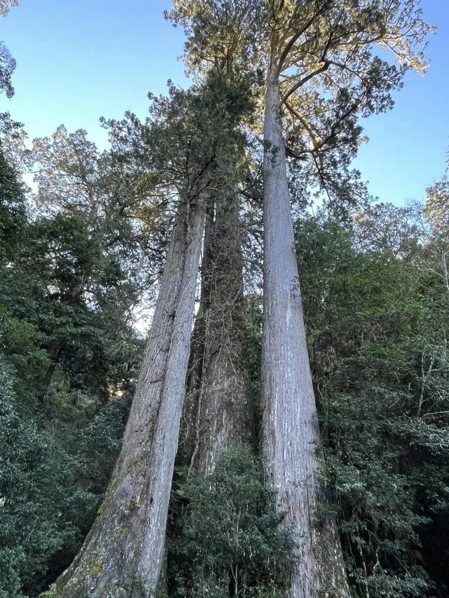

蕨类与裸子植物 · 植物界
台湾杉 Taiwania cryptomerioides

台湾杉是亚洲最高的树种之一，可长到 70 m 以上，树干通直如塔，是中国国家一级重点保护野生植物。
- 分类
- 门裸子植物门纲松纲目松柏目科柏科属台湾杉属
- 栖息环境
- 海拔 1500–3000 m 的云雾带山地，喜温暖湿润多雾气候
- 地理分布
- 中国台湾、云南、贵州、湖北等地及缅甸北部
- 保护级别
- IUCN 暂无评估；中国国家一级重点保护野生植物
物种志
台湾杉是柏科台湾杉属常绿大乔木，高可达 70–90 m，胸径可达 3 m 以上，树干通直，树皮灰褐色、呈条片状剥落。叶片有两种形态：幼树与侧枝上的叶为钻形或线形，老树主枝上的叶为鳞形，贴生枝上。雌雄同株，雄球花簇生，球果卵形，成熟时褐色，种鳞木质，种子具翅。
台湾杉分布于中国台湾、云南、贵州、湖北等地及缅甸北部，多生于海拔 1500–3000 m 的云雾带山地，喜温暖湿润、多雾的气候和排水良好的酸性土壤。它树体高大、生长缓慢、寿命极长，是亚洲著名的巨树，对研究柏科植物的系统演化有重要价值。台湾杉木材纹理直、材质优良，但野生植株稀少，被列为中国国家一级重点保护野生植物，严禁采伐。
形态与习性
- 树高70–90 m，亚洲最高的树种之一
- 胸径可达 3 m 以上
- 叶幼树钻形，老树鳞形
- 球果卵形，种子具翅
- 生境云雾带山地，喜湿润
- 保护国家一级重点保护野生植物
趣味知识
- 台湾杉是亚洲最高的树种之一，个别植株可长到 90 m 高。
- 它的幼树和侧枝长钻形叶，老树主枝上则变成鳞形叶。
- 台湾杉野生植株稀少，被列为国家一级重点保护野生植物。